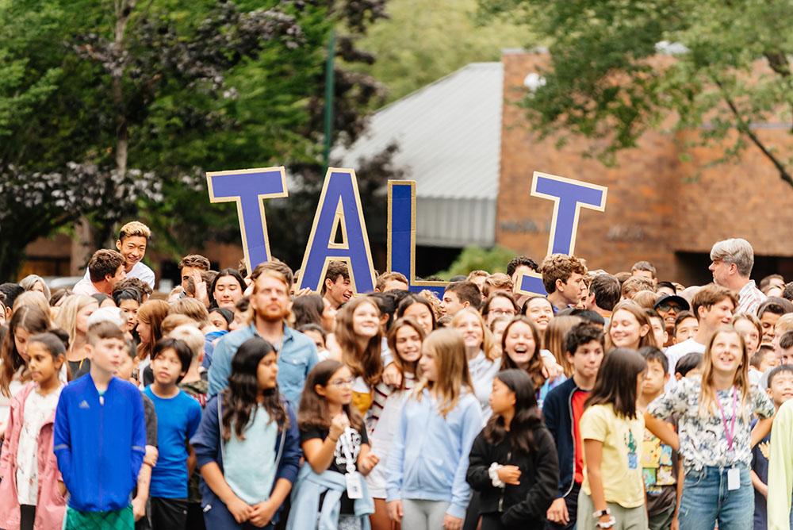

Eastside Preparatory School provides a thoughtfully designed food program that emphasizes nutrition, variety, and sustainability. The school's dining services offer students a wide range of meal options that cater to diverse dietary needs, including vegetarian, vegan, and gluten-free choices. Meals are prepared using fresh, high-quality ingredients, with a strong focus on seasonal and locally sourced produce whenever possible. The menu typically includes a mix of hot entrees, fresh salads, soups, and healthy snacks, all crafted to promote well-being and sustained energy throughout the school day. In addition to providing nutritious meals, Eastside Prep fosters a positive dining environment where students are encouraged to make mindful food choices and learn about the importance of a balanced diet. The school also values student feedback and often incorporates suggestions into menu planning, creating a collaborative and inclusive approach to campus dining.
